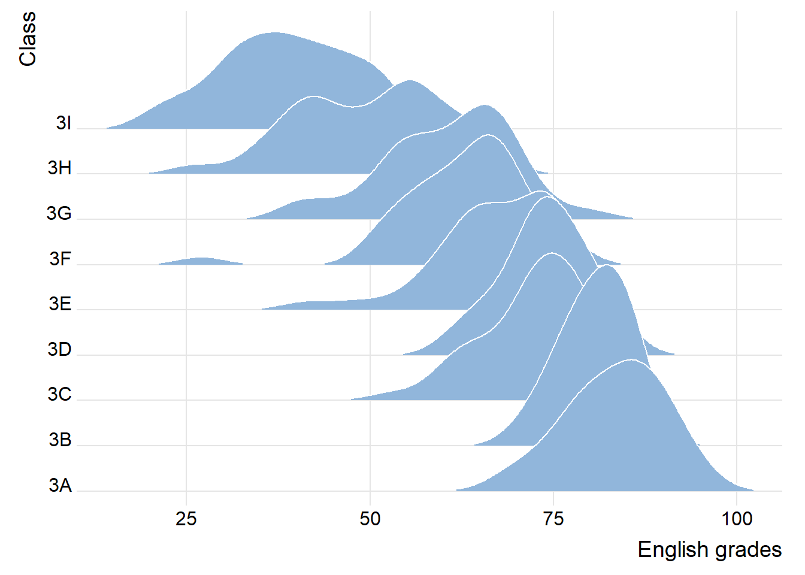
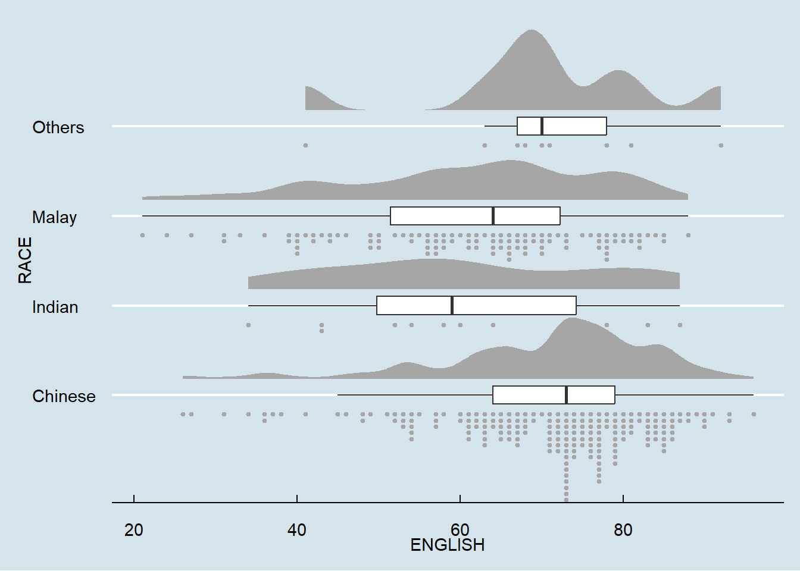

Learning Outcome
Visualising distribution is not new in statistical analysis. In chapter 1 we have shared with you some of the popular statistical graphics methods for visualising distribution are histogram, probability density curve (pdf), boxplot, notch plot and violin plot and how they can be created by using ggplot2. In this chapter, we are going to share with you two relatively new statistical graphic methods for visualising distribution, namely ridgeline plot and raincloud plot by using ggplot2 and its extensions.
1. Getting Started
ggridges, a ggplot2 extension specially designed for plotting ridgeline plots
Rows: 322 Columns: 7
── Column specification ────────────────────────────────────────────────────────
Delimiter: ","
chr (4): ID, CLASS, GENDER, RACE
dbl (3): ENGLISH, MATHS, SCIENCE
ℹ Use `spec()` to retrieve the full column specification for this data.
ℹ Specify the column types or set `show_col_types = FALSE` to quiet this message.2. Making Ridgeline Plot
The R package used in this section for ridgeline plot is ggridges.
Ridgeline plot (sometimes called Joyplot) is a data visualisation technique for revealing the distribution of a numeric value for several groups. Distribution can be represented using histograms or density plots, all aligned to the same horizontal scale and presented with a slight overlap.
Ridgeline plots make sense when the number of group to represent is medium to high, and thus a classic window separation would take to much space. Indeed, the fact that groups overlap each other allows to use space more efficiently. If you have less than 5 groups, dealing with other distribution plots is probably better.
2.1 Create plot by geom_density_ridges()
refer to this link for geom_density_ridges()
Show the code: making ridgeline plot by geom_density_ridges()
ggplot(exam,
aes(x = ENGLISH,
y = CLASS)) +
geom_density_ridges(
scale = 3,
rel_min_height = 0.01,
bandwidth = 3.4,
fill = lighten("#7097BB", .3),
color = "white"
) +
scale_x_continuous(
name = "English grades",
expand = c(0, 0)
) +
scale_y_discrete(name = "Class", expand = expansion(add = c(0.2, 2.6))) +
theme_ridges()
2.2 Design color of ridgeline plot
2.2.1 Fill gradients along the x axis
Show the code: fill color by geom_density_ridges_gradient()
ggplot(exam,
aes(x = ENGLISH,
y = CLASS,
fill = stat(x))) +
geom_density_ridges_gradient(
scale = 3,
rel_min_height = 0.01) +
scale_fill_viridis_c(name = "Temp. [F]",
option = "H") +
scale_x_continuous(
name = "English grades",
expand = c(0, 0)
) +
scale_y_discrete(name = "Class", expand = expansion(add = c(0.2, 2.6))) +
theme_ridges()Warning: `stat(x)` was deprecated in ggplot2 3.4.0.
ℹ Please use `after_stat(x)` instead.Picking joint bandwidth of 3.18Design color by geom_density_ridges_gradient()or geom_ridgeline_gradient()
For example, in the code chunk above:
geom_density_ridges_gradient( scale = 3, rel_min_height = 0.01) +
scale_fill_viridis_c(name = "Temp. [F]", option = "H")
2.2.2 Mapping the probabilities directly onto color
Show the code: fill color by stat_density_ridges()
Picking joint bandwidth of 3.18
It is important include the argument calc_ecdf = TRUE in stat_density_ridges().
2.2.3 Ridgeline plots with quantile lines
Show the code: fill quantile lines(quantiles = 4)
Picking joint bandwidth of 3.18
Instead of using number to define the quantiles, we can also specify quantiles by cut points such as 2.5% and 97.5% tails to colour the ridgeline plot.
Show the code: fill quantile lines(cut points)
ggplot(exam,
aes(x = ENGLISH,
y = CLASS,
fill = factor(stat(quantile))
)) +
stat_density_ridges(
geom = "density_ridges_gradient",
calc_ecdf = TRUE,
quantiles = c(0.025, 0.975)
) +
scale_fill_manual(
name = "Probability",
values = c("#FF0000A0", "#A0A0A0A0", "#0000FFA0"),
labels = c("(0, 0.025]", "(0.025, 0.975]", "(0.975, 1]")
) +
theme_ridges()Picking joint bandwidth of 3.18
3. Making Raincloud Plot
The R package used in this section for raincloud plot is ggdist.
3.1 Steps for creating a raincloud plot
3.1.1 Making half-eye plot
Show the code: making half-eye plot by stat_halfeye()
3.1.2 Adding the boxplot with geom_boxplot()
Show the code: add boxplot next to half-eye plot
ggplot(exam,
aes(x = RACE,
y = ENGLISH)) +
stat_halfeye(adjust = 0.5,
justification = -0.2,
.width = 0,
point_colour = NA) +
geom_boxplot(width = .20,
outlier.shape = NA)+
theme_clean() +
theme(plot.background = element_rect(fill = "white", color = NA),
panel.background = element_rect(fill = "white", color = NA))3.1.3 Adding the Dot Plots with stat_dots()
Show the code: add dot plots
ggplot(exam,
aes(x = RACE,
y = ENGLISH)) +
stat_halfeye(adjust = 0.5,
justification = -0.2,
.width = 0,
point_colour = NA) +
geom_boxplot(width = .20,
outlier.shape = NA) +
stat_dots(side = "left",
justification = 1.2,
binwidth = .5,
dotsize = 2) +
theme_clean() +
theme(plot.background = element_rect(fill = "white", color = NA),
panel.background = element_rect(fill = "white", color = NA))3.2 Design the raincload plot
Flip the raincloud chart and apply another theme to make the raincloud plot more beautiful.
Show the code: filp the chart and apply theme
